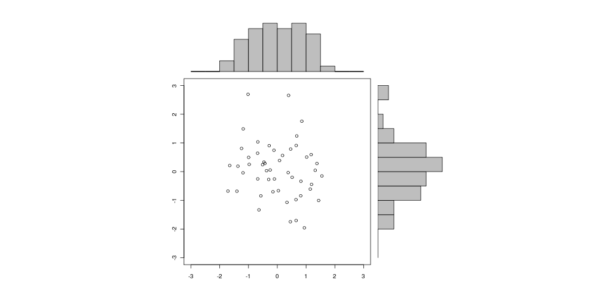

Org & R via Babel Example
Overview
The following is a quick example of a document created in org-mode which uses org-babel to allow inline R code to produce graphs.
Alphabits
I like cereal, especially when it spells.
Graph courtesy of http://addictedtor.free.fr/graphiques/sources/source_78.R
# Data from org
doublePlot = function (base, plotFunc,
pngopts = c( width = 1024, height = 500 ),
pdfopts = c( width = 10, height = 7.5, paper = 'usr')
) {
# basename from org-babel
myPng = paste(base,"png",sep=".")
myPdf = paste(base,"pdf",sep=".")
png(myPng, pngopts )
plotFunc()
dev.off()
pdf(myPdf, pdfopts)
plotFunc()
dev.off()
}
doublePlot(base=basename, plotFunc = function() {
x <- pmin(3, pmax(-3, rnorm(50)))
y <- pmin(3, pmax(-3, rnorm(50)))
xhist <- hist(x, breaks=seq(-3,3,0.5), plot=FALSE)
yhist <- hist(y, breaks=seq(-3,3,0.5), plot=FALSE)
top <- max(c(xhist$counts, yhist$counts))
xrange <- c(-3,3)
yrange <- c(-3,3)
nf <- layout(matrix(c(2,0,1,3),2,2,byrow=TRUE), c(3,1), c(1,3), TRUE)
#layout.show(nf)
par(mar=c(3,3,1,1))
plot(x, y, xlim=xrange, ylim=yrange, xlab="", ylab="")
par(mar=c(0,3,1,1))
barplot(xhist$counts, axes=FALSE, ylim=c(0, top), space=0)
par(mar=c(3,0,1,1))
barplot(yhist$counts, axes=FALSE, xlim=c(0, top), space=0, horiz=TRUE)
})

Thanks!
Org-mode rocks.